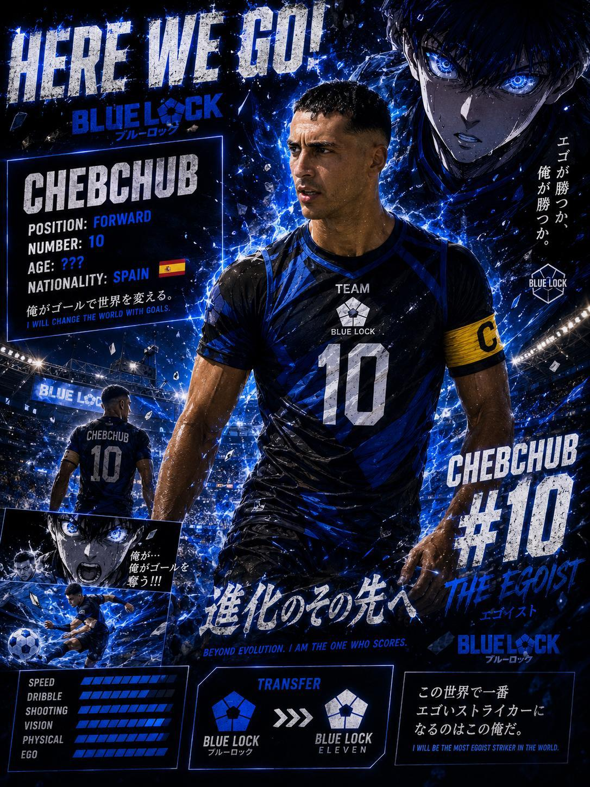
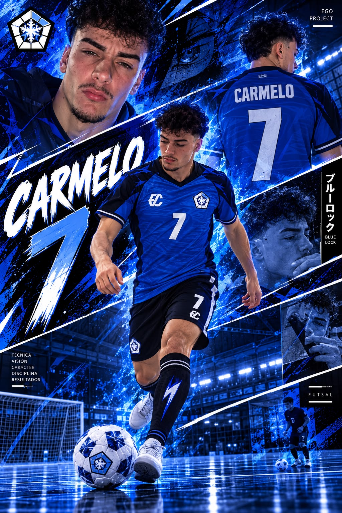
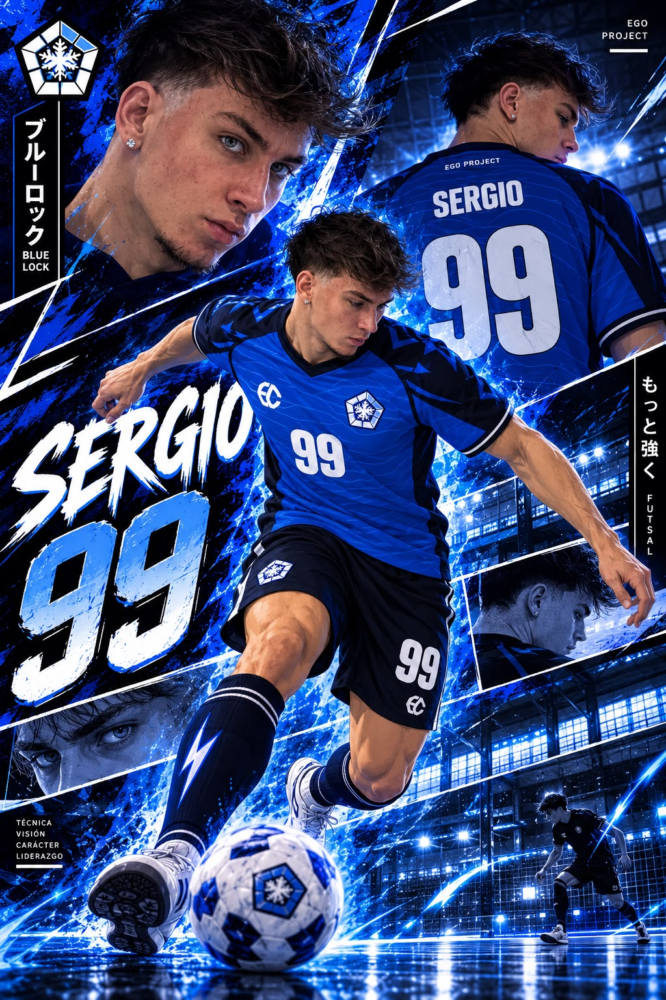
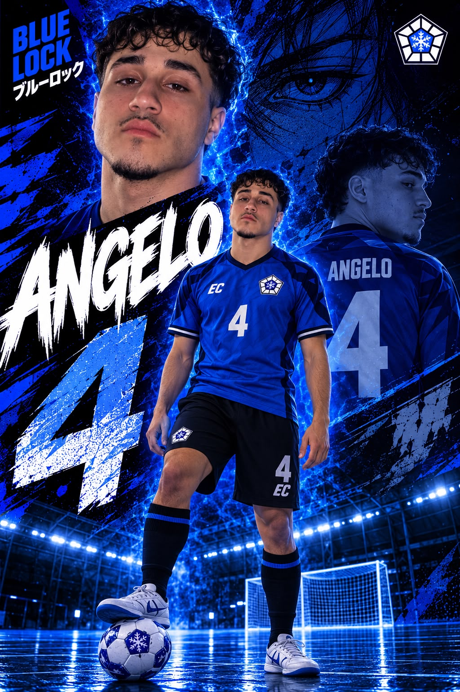
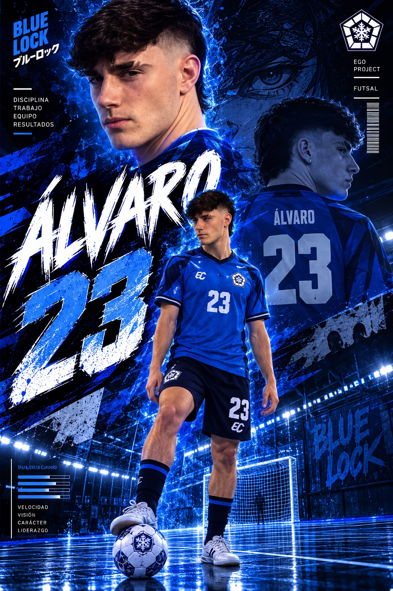
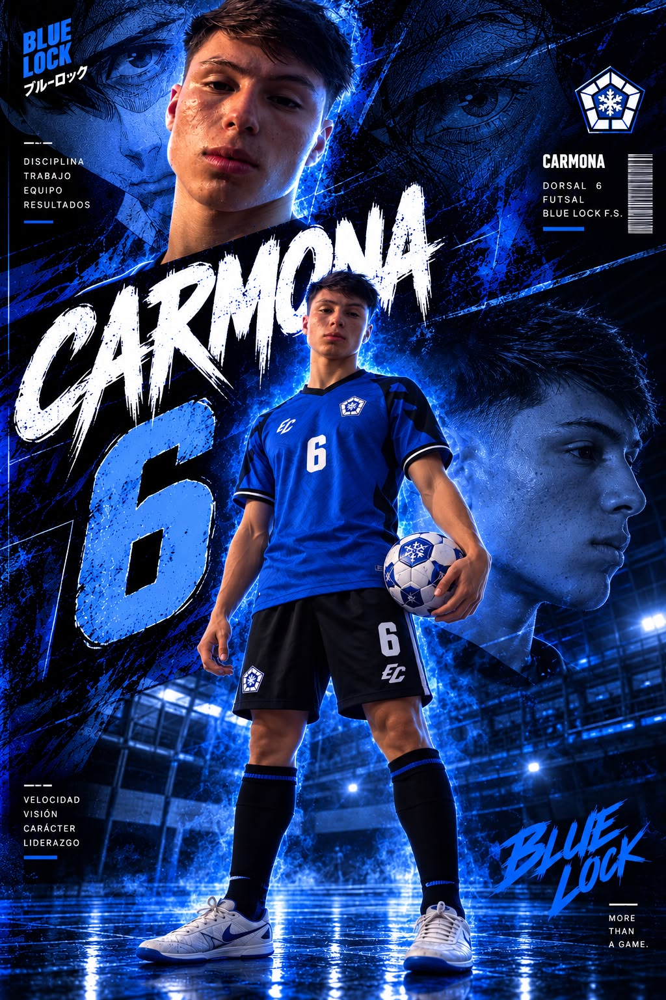
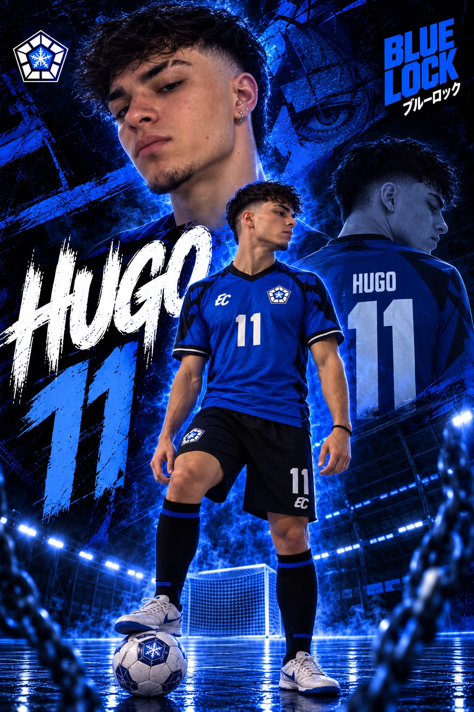
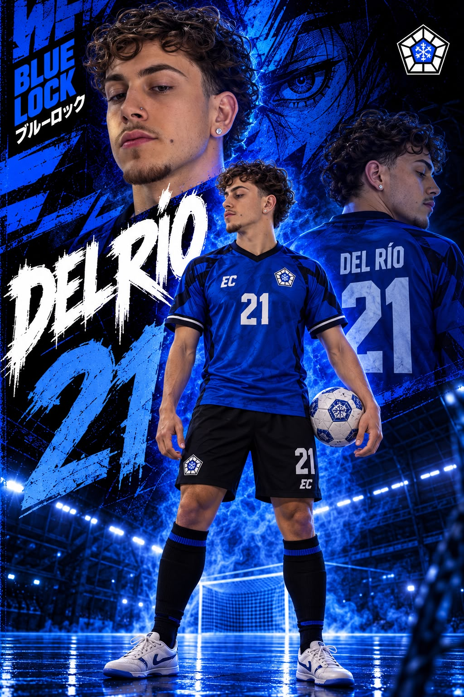
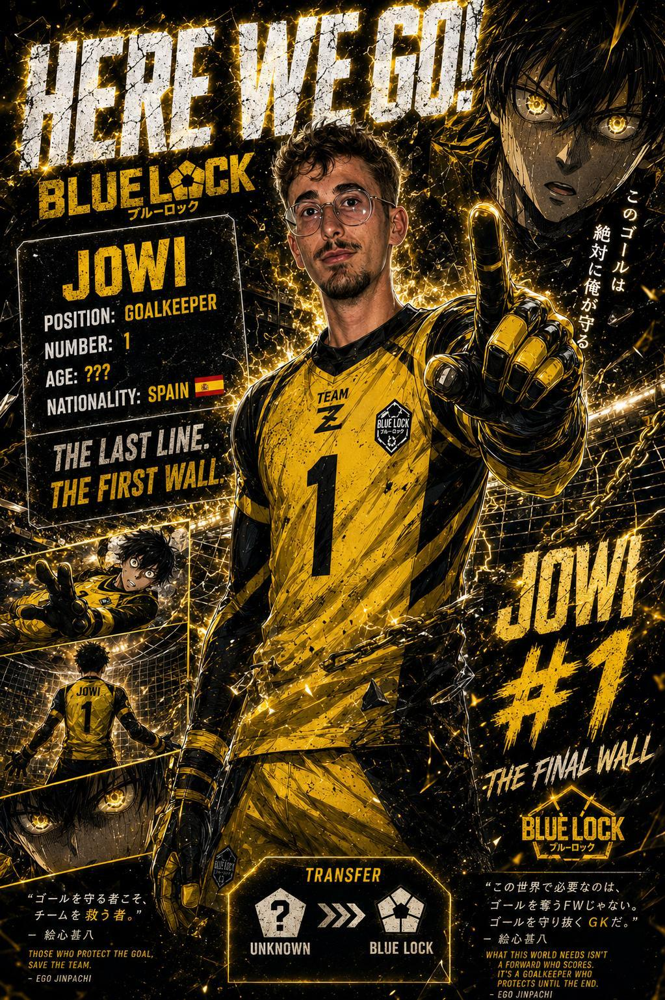
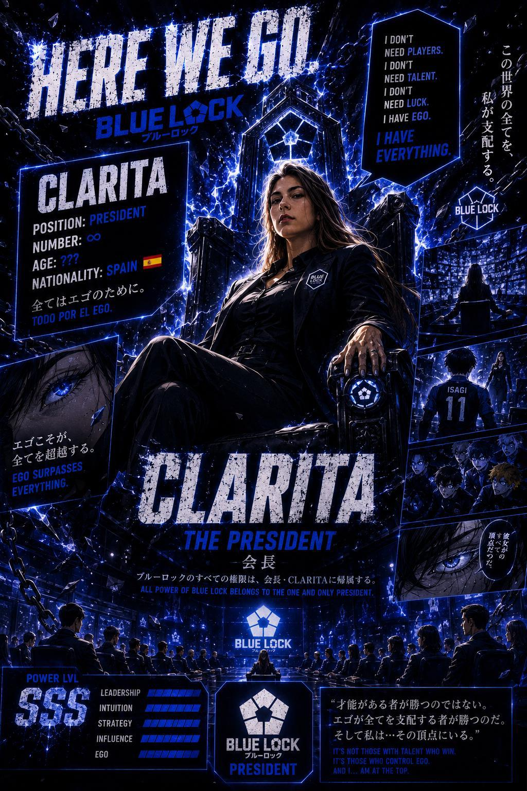

Mucho ego, poco cardio
Proyecto serio por fuera, grupo de amigos por dentro.
Bienvenidos al club donde se discuten más los cambios que las tácticas. Una web para nuestra gente, nuestras pachangas y nuestras leyendas. Obligados a llamarnos "Noctra Torrejón B" debido a distintos altercados.
Proyecto serio por fuera, grupo de amigos por dentro.
Por retraso del presi buscando proveedor, la equipación oficial no se estrenará hasta al menos la jornada 3. De momento toca competir con camisetas prestadas, pero con dignidad dudosa.
Volvemos tras descansar en la J2. A las 15:00, a ver si sería mucho pedir llegar a las 14:45. Venimos de empatar 2-2 en la J1.
Todo lo que necesitas saber sobre Blue Lock FS.
Los 10 integrantes de Blue Lock FS. Mucho ego, poco cardio y un solo escudo.
Clasificación real de Senior Tercera, nuestro calendario y resultados. ¡Mira cómo vamos en la liga!
¿Quién es el verdadero número uno de Blue Lock?
Compite contra tus compañeros en nuestros videojuegos personalizados. Consigue puntos, supera récords y demuestra quién manda fuera del campo.
¿Quieres volver a ver los goles, las paradas y aquellos fallos que todavía se comentan? Aquí tienes el partido completo.
Todos los goles, las jugadas y los momentos que alguno preferiría olvidar.
Diez jugadores, un escudo y demasiada confianza. Aquí están los elegidos para conquistar la liga... o al menos llegar puntuales al partido.

Se considera el protagonista de todos los partidos. Si marca, es talento. Si falla, es culpa del pase. Su ego tiene más minutos que sus piernas, aunque encontrar proveedor para las camisetas haya sido su primera gran prueba.

El arquitecto del equipo. Diseña jugadas que ni sus compañeros comprenden. Según él, no pierde balones: crea nuevas situaciones tácticas para el rival.

Lleva el 99 porque los números normales se le quedaban pequeños. En su cabeza juega la Champions; en la realidad, al pequeño dicaprio le pesan las piernas..

El nombre suena celestial, pero en el campo no promete milagros. Cada intervención suya puede acabar en jugadón o en meme del grupo.

El 23 de Blue Lock. No sabemos si viene a revolucionar el fútbol sala o a revolucionar el grupo de WhatsApp. De momento promete ambas cosas.

Su ego entra al pabellón cinco minutos antes que él. No necesita suerte, solo un balón y alguien dispuesto a aguantar la celebración.

Tiene un pacto con el balón: si lo recibe, no lo devuelve. Ve la portería desde cualquier sitio, aunque a veces sea la de otro pabellón.

Misterio absoluto. Nadie sabe qué jugada va a hacer, probablemente ni él. Tampoco se sabe cuando debutará, pero si necesitaís movida seguro que aparece.
Nuestro Lamine Yamal, el dorsal 9 viene con expectativas. El protegido del equipo, con 16 años os hundirá. No le subestimeís irá con todo.

La última línea de defensa. Tiene la difícil misión de parar los disparos del rival y sobrevivir a los errores de sus compañeros. Merece un plus de peligrosidad.
Mientras los jugadores discuten quién es el mejor, alguien tiene que hacer que el equipo exista legalmente.

La jefa del proyecto. Controla los papeles, las redes y el destino de diez egos desatados. Tiene poder absoluto sobre el club.
Clasificación de la liga y calendario de Blue Lock FS (inscrito como Noctra Torrejón B).
Datos de la clasificación después de las dos primeras jornadas.
| # | Equipo | J | G | E | P | GF | GC | DG | Pts |
|---|---|---|---|---|---|---|---|---|---|
| 1 | Limoneta OG | 2 | 2 | 0 | 0 | 7 | 1 | +6 | 6 |
| 2 | Borussia Donuts | 2 | 2 | 0 | 0 | 8 | 3 | +5 | 6 |
| 3 | Fifita | 2 | 1 | 1 | 0 | 5 | 3 | +2 | 4 |
| 4 | Class Hair Salon | 2 | 1 | 1 | 0 | 7 | 6 | +1 | 4 |
| 5 | Águilas Team | 2 | 1 | 0 | 1 | 5 | 5 | +0 | 3 |
| 6 | ADN Futsal | 2 | 1 | 0 | 1 | 2 | 5 | -3 | 3 |
| 7 | Blue Lock FS | 1 | 0 | 1 | 0 | 2 | 2 | +0 | 1 |
| 8 | Taka Taka B | 2 | 0 | 1 | 1 | 2 | 3 | -1 | 1 |
| 9 | Torrejón Hortaleza | 2 | 0 | 0 | 2 | 5 | 7 | -2 | 0 |
| 10 | Real Fachadolid | 2 | 0 | 0 | 2 | 2 | 6 | -4 | 0 |
| 11 | Vermeer | 1 | 0 | 0 | 1 | 0 | 4 | -4 | 0 |
Partidos y descansos de Blue Lock FS. Cuando no hay hora ni campo confirmados, se indicarán como pendientes.
| Puesto | Jugador | Goles | Asist. | Partidos |
|---|---|---|---|---|
1 |
LEÓN | 1 | 0 | 1 |
2 |
ÁLVARO | 1 | 0 | 1 |
3 |
ALEX | 0 | 0 | 1 |
4 |
JOWI | 0 | 0 | 1 |
5 |
LUIS | 0 | 0 | 1 |
6 |
ISAGI | 0 | 0 | 1 |
7 |
CARMELO | 0 | 0 | 0 |
8 |
SERGIO | 0 | 0 | 0 |
9 |
ANGELO | 0 | 0 | 0 |
10 |
D. DEL RIO | 0 | 0 | 0 |
Donde nacen las leyendas, las excusas y los memes.
Partidos, celebraciones y fotos que probablemente no deberían publicarse.
Las mejores frases del equipo. Algunas merecen una sanción disciplinaria.
Fallos a puerta vacía, excusas y material para chantaje amistoso.